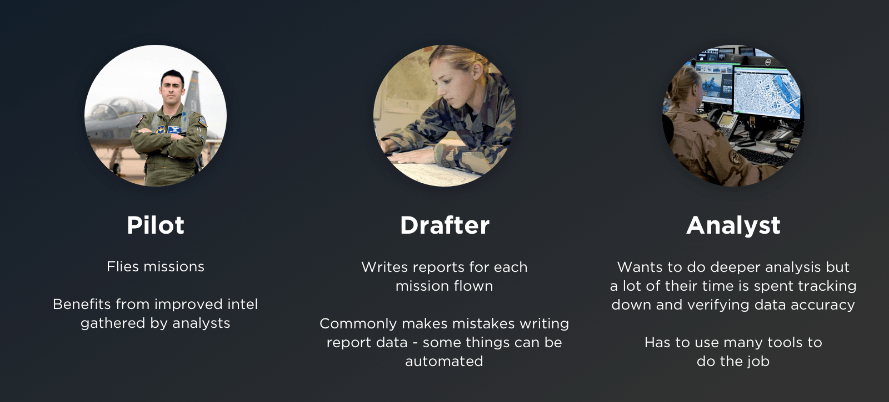

Mission Reporting Tool
I led the design of an app that improves the way the US Air Force reports and visualizes mission data.
Enterprise App Data Vis Lean UX Product Design
I led the design of an app that improves the way the US Air Force reports and visualizes mission data.
Enterprise App Data Vis Lean UX Product Design
I led the design of a tool allows US Air Force analysts to create reports 8 times faster and analyze reports geospatially. I advocated for user needs by conducting over 100 user interviews and our team achieved 100% user adoption across hundreds of users worldwide within a year of agile development. This project’s success led to increased funding from Congress.
1 year, 3 months
In 2017, the US Air Force wanted to modernize how software is built, so it created Kessel Run and brought in Pivotal Labs to teach and enable the Air Force how to build modern software.
While today Kessel Run employs nearly 300 product managers, designers, and engineers, when I was there, there were less than a dozen people. Since it was small at the time, I worked directly with Kessel Run leadership and end users to lead the design of a key operational tool from the ground up.
The success of this project helped validate agile software development within the Air Force and gave Kessel Run leadership the confidence to secure funding from Congress.
Thousands of missions are flown every day, and during a flight, pilots note what they see. They may spot the development of a new building at a specific coordinate or even take note of a drone at a specific altitude and time.
Each of these missions gets a report written up. While some analysts used Microsoft Word to create the reports, others used a legacy tool to create these reports -- but the reports it generated were not human-friendly. Because of these inconsistencies, the Air Force wasn't able to effectively mine insights from the data. The US Air Force wanted our team to explore the following problem:
This project was split into two phases: discovery and framing to identify the right users and problems, and iterative product development.
One key challenge on this project was that while Kessel Run had a clear vision of the end goal, they didn't know which users and stakeholders to begin with. There are nearly 60 Air Force bases worldwide, and each of them have slightly different leadership structures and standards on how to create reports.
After leading nearly 67 user and stakeholder interviews, our team narrowed down an initial list of high-level goals and identified a first set of users to target:
After reviewing the reporting structures across a few Air Force bases, I created 3 high-level personas.
The interviews revealed a few key insights:

© Kevin Chang, All Rights Reserved